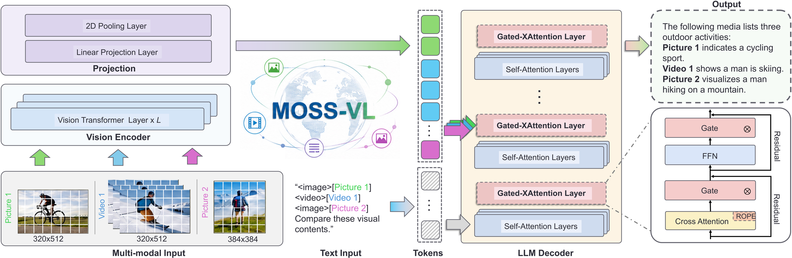
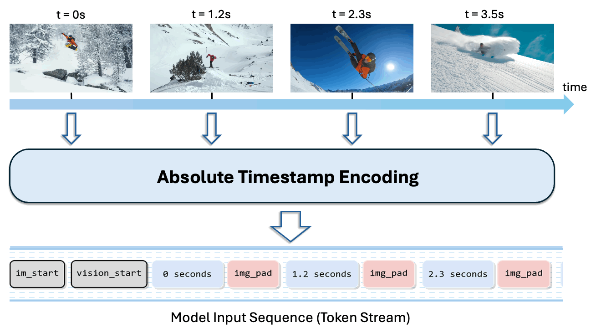
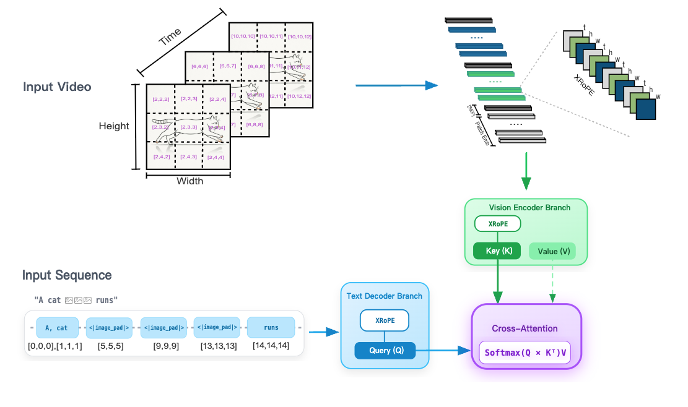
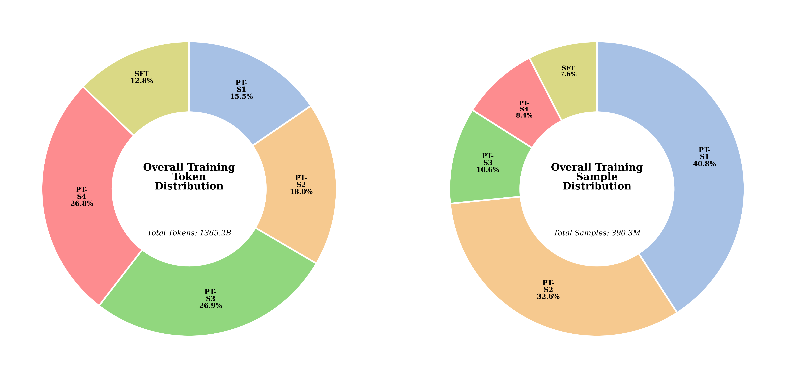
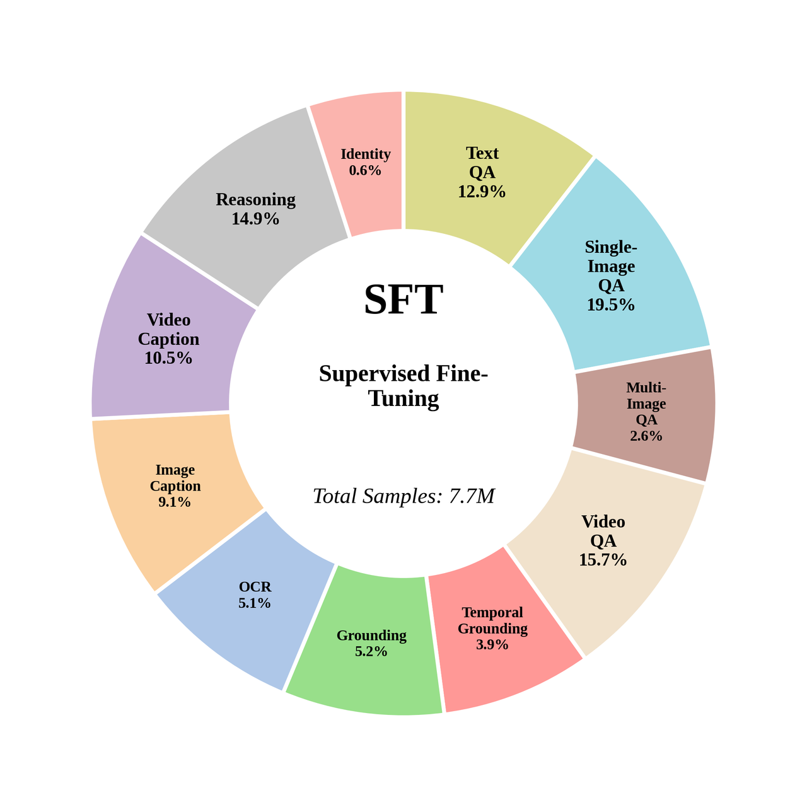

MOSS-VL 采用基于交叉注意力（Cross-attention）的架构，实现了视觉编码与认知推理的解耦。该架构为离线图像与视频理解提供了统一基座。由于原生支持模态交错，模型可在统一的流水线中处理复杂的图像与视频序列，无需繁重的预处理流程。持续视频流上的实时交互由独立的 MOSS-VL-Realtime 提供。

为了确保模型能够精准感知事件的节奏与时长，MOSS-VL 在每一采样帧中均注入了绝对时间戳，从而将推理过程锚定在精确的时间参考基准之上。

每段视频中都交织插入了精确的时间标记。每个时间戳均由专用特殊 Token（<|time_start|> … <|time_end|>）封装，从而明确地锚定了每一帧视觉图像的时间位置：
<|im_start|><|vision_start|> <|time_start|>0.0 seconds<|time_end|><|image_pad|> <|time_start|>1.2 seconds<|time_end|><|image_pad|> <|time_start|>2.3 seconds<|time_end|><|image_pad|> ... <|vision_end|>视频显示了一个具有连续动作的动态场景...<|im_end|>
dt），模型能够对运动物理规律进行推理，从而实现对速度、加速度和运动轨迹的精确估算。MOSS-VL 采用了专门针对其基于交叉注意力的视觉—语言架构而定制的交叉注意力旋转位置编码（Cross-attention Rotary Position Embedding, XRoPE）。该机制将文本 Token 和视频 Patch 映射到一个由时间（t）、高度（h）和宽度（w）定义的统一 3D 坐标空间中。

为了优化跨模态对齐，XRoPE 被注入到视觉部分的 Key（K） 中以增强位置感知能力，同时保持 Value（V） 不变，从而确保特征的保真度。与此同时，XRoPE 被应用于文本部分的 Query（Q），使模型能够通过直接的坐标对齐，精准地检索任意时空区域的信息。
MOSS-VL 采用多阶段训练方法，逐步构建多模态能力。

MOSS-VL 通过系统性的四阶段预训练，从零开始逐步构建多模态能力：
建立视觉特征与语言空间之间的初步桥梁。通过在大规模图文对上进行训练，模型学习将视觉概念与其对应的文本描述联系起来，同时培养基础的 OCR 能力，以理解图像中的文字。
扩大模型对海量、多样化多模态语料库的接触面，拓宽模型对世界知识和复杂场景的掌握，为通用智能和高分辨率感知奠定坚实基础。此阶段还引入了短视频片段，以初步培养视频理解能力。
通过在大量高质量的感知、理解和推理数据上进行训练，全面提升模型质量。此阶段结合了细粒度的图像感知、复杂的跨多图理解以及高保真视频推理，强化模型捕捉复杂视觉细节与时序关系的能力。
将模型的视野延伸至长视频理解，同时通过精心设计的退火（Annealing）策略，利用精选的顶级多模态数据进行训练，将模型的最终性能推向巅峰。
在预训练模型的基础上，MOSS-VL 通过有监督微调（SFT）进行了进一步优化，以对齐人类意图，并全面释放其交互与指令遵循能力。

我们对 MOSS-VL-Instruct-0708 在离线多模态理解上进行了系统评估，覆盖感知、视频理解、定位、文档 / OCR 与推理。下表同时列出 0708 版本、上一版 MOSS-VL-0408 及开源基线。
评分按各项基准分别展示，不合并为单一综合分。粗体红色表示该行已报告结果中的最优分数，下划线表示第二名。
可在图表内左右滑动查看完整评测。
conda create -n moss_vl python=3.12 pip -y conda activate moss_vl pip install -i https://pypi.org/simple --no-build-isolation -r requirements.txt
更多可直接运行的推理示例和 Demo 素材，请参阅 inference/README.md。推理支持全模态离线查询，包括纯文本、单图、多图、单视频、多视频，以及基于 messages 格式的图视频交错输入。
offline_generate 做单条推理import queue
import threading
import torch
from transformers import AutoModelForCausalLM, AutoProcessor
checkpoint = "/path/to/dummy-checkpoint"
processor = AutoProcessor.from_pretrained(
checkpoint,
trust_remote_code=True,
frame_extract_num_threads=1,
)
model = AutoModelForCausalLM.from_pretrained(
checkpoint,
trust_remote_code=True,
device_map="auto",
torch_dtype=torch.bfloat16,
attn_implementation="flash_attention_2",
)
query = {
"messages": [
{
"role": "user",
"content": [
{"type": "image", "image": "path/to/example.jpg"},
{"type": "text", "text": "描述这张图片。"},
],
}
],
"media_kwargs": {},
"generate_kwargs": {
"max_new_tokens": 256,
"do_sample": False,
"vision_chunked_length": 64,
},
}
input_queue = queue.Queue()
output_queue = queue.Queue()
worker = threading.Thread(
target=model.offline_generate,
args=(processor, input_queue, output_queue),
kwargs={"vision_chunked_length": 64},
daemon=True,
)
worker.start()
input_queue.put(query)
text_chunks = []
while True:
item = output_queue.get()
if item in {"<|round_start|>"}:
continue
if item == "<|round_end|>":
break
text_chunks.append(item)
print("".join(text_chunks))
input_queue.put({"stop_offline_generate": True})
worker.join()
如果需要简单的 batch 离线推理，也可以直接使用 offline_batch_generate：
offline_batch_generate 做 batch 推理import torch
from transformers import AutoModelForCausalLM, AutoProcessor
checkpoint = "/path/to/dummy-checkpoint"
processor = AutoProcessor.from_pretrained(
checkpoint,
trust_remote_code=True,
frame_extract_num_threads=1,
)
model = AutoModelForCausalLM.from_pretrained(
checkpoint,
trust_remote_code=True,
device_map="auto",
torch_dtype=torch.bfloat16,
attn_implementation="flash_attention_2",
)
queries = [
{
"messages": [
{
"role": "user",
"content": [{"type": "text", "text": "描述样本 A。"}],
}
],
"media_kwargs": {},
"generate_kwargs": {"max_new_tokens": 256, "do_sample": False},
},
{
"messages": [
{
"role": "user",
"content": [{"type": "text", "text": "描述样本 B。"}],
}
],
"media_kwargs": {},
"generate_kwargs": {"max_new_tokens": 256, "do_sample": False},
},
]
with torch.no_grad():
result = model.offline_batch_generate(
processor,
queries,
vision_chunked_length=64,
)
texts = [item["text"] for item in result["results"]]
print(texts)
我们提供了一套基于 HuggingFace transformers.Trainer 的轻量级 SFT 微调框架，支持全参数训练与 LoRA，且可独立控制视觉编码器、语言模型和 LM Head 是否参与训练。
# 全参数 SFT（默认冻结视觉编码器） bash finetune/scripts/run_sft.sh # LoRA SFT pip install -i https://pypi.org/simple peft bash finetune/scripts/run_sft_lora.sh
训练数据采用与推理查询格式兼容的 JSON 结构，只需额外添加 response 字段：
[
{
"prompt": "描述这张图片。",
"response": "一幅群山环绕的美丽风景画。",
"images": ["path/to/image.jpg"],
"videos": []
}
]
同时支持多轮对话格式，详细文档请参阅 finetune/README.md。
| 模型 | 🤗 Download | 🤖 ModelScope |
|---|---|---|
| MOSS-VL-Base-0408 | HuggingFace | ModelScope |
| MOSS-VL-Instruct-0408 | HuggingFace | ModelScope |
| MOSS-VL-Base-0708 | HuggingFace | ModelScope |
| MOSS-VL-Instruct-0708 | HuggingFace | ModelScope |
| MOSS-VL-Realtime | HuggingFace | ModelScope |
SGLang 官方已正式支持 MOSS-VL。如需查看基于 SGLang 的部署与服务化说明，请参考 sglang/README_zh.md。
我们衷心感谢 NVIDIA 提供的 Megatron-LM 框架，以及 Qwen 团队 提供的强大的 Qwen 系列语言模型；这些优秀的开源工作为我们的训练基础设施和核心语言模型奠定了坚实基础。同时，我们也由衷感谢 SGLang 团队 提供的高性能 SGLang 推理服务框架，为 MOSS-VL 的高效部署提供了重要支持。
@misc{moss_vl_2026,
title = {{MOSS-VL Technical Report}},
author = {OpenMOSS Team},
year = {2026},
howpublished = {\url{https://github.com/OpenMOSS/MOSS-VL}},
note = {GitHub repository}
}